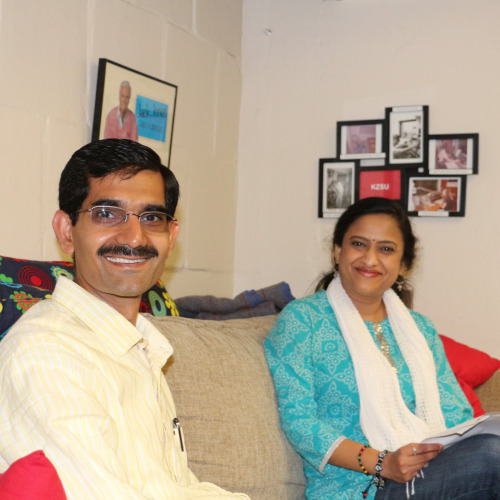

Courage, Compassion, and Care - In conversation with Dr. Vijay Tiwari
In this show we talk to Bay Area physician, Dr. Vijay Tiwari, about the three cornerstones of his life- Courage, Compassion, and Care- which have enabled him to not only uplift himself from various adversities in life but also inspired him to work for a bigger cause.
Dr. Vijay Tiwari is a physician with Kaiser Permanente. He received his medical degree from the Government Medical College of Trivandrum, University of Kerala, Kerala, India. He is currently the president of the AMERICAN ASSOCIATION OF PHYSICIANS OF INDIAN ORIGIN (AAPIO). AAPIO is considered a well-recognized physician organization in California. AAPIO is focused on international medical graduates as well as second generation Indo-Americans graduating from American medical schools. AAPIO regularly organizes community services, medical assistance, public education forums on medical topics, and fund-raising events in the United States and India. The association is organized exclusively for scientific, educational, cultural, and charitable purposes. Contributions to the organization qualify as tax exempt under section 501© of IRS.
He has also founded DSET public school in his hometown Sabaibandh, Karnai, Ballia in Uttar Pradesh. DSET public school’s mission is to make free of cost basic education available to those who cannot afford it. This institution provides world class education to all, irrespective of their economical status, cast, religion, etc. with the objective of creating world class citizens. Donations to this cause can be made in the USA via the Daya Sumitra Educational Society Inc., USA which is a 501©(3) non-profit organization. A video introduction to DSET public school can be found here.
Dr. Vijay Tiwari has always been active in in helping out for humanitarian causes. He lead humanitarian relief efforts in 1998 after the Orissa Super-Cyclone as well as after the Gujarat Earthquake in 2001. His work has earned him the following awards and recognitions: Bharat Gaurav Award 2014, Donald Kaufman Physician of the year 2012, Outstanding Supporting Physician of the Year 2011, Compassion in Action Award 2011, and Making Lives Better Award 2011.